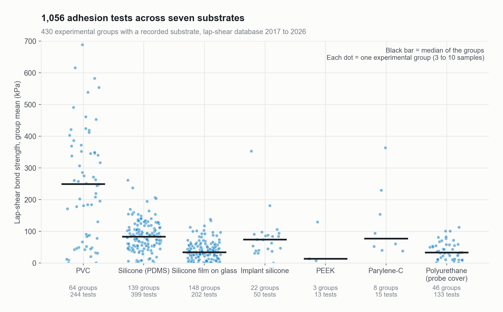

Adhesion tests across seven substrates
Substrate
All
Year
All
Water ratio W
All
Failure mode
All
cohesive
adhesive

Each dot is one experimental group (3 to 10 samples); black bar = median of the groups. Source: ZwiCoat lap-shear database, 2017 to 2026. Hover or tap a dot for details.
Table view (filtered)